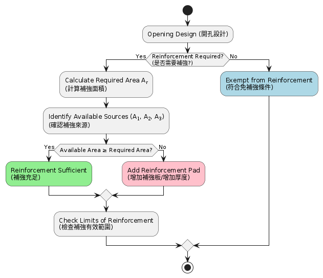

開孔補強判斷（Openings & Reinforcement）
本節為開孔補強之工程判斷入口，涵蓋 ASME Sec.VIII Div.1 UG-36 ~ UG-43。
🔍 工程判斷流程（快速入口）

🧩 是否需要補強？（UG-36）
判斷是否符合免補強條件：
- 小開孔（small opening）
- 壓力與尺寸限制
- 殼體厚度足夠
符合 UG-36(c)(3) → 可免補強
👉 若不符合 → 必須進行補強設計
📐 補強面積是否足夠？（UG-37）
核心原則：
可用補強面積 ≥ 移除面積
補強來源包含：
- 殼體 excess thickness
- nozzle neck 厚度
- reinforcement pad
👉 此為設計成立的核心判斷
📏 補強範圍如何定義？（UG-40）
補強面積計算限制：
- 僅能計算有效距離內材料
- 超出範圍不可列入補強
👉 常見錯誤來源
⚠️ 常見工程誤解
- ❌ 只看 nozzle 厚度
- ❌ 忽略 reinforcement area 分布
- ❌ 未正確定義 limits of reinforcement
- ❌ 認為補強板一定需要
🧠 工程本質
開孔補強不是「補多少厚度」
而是：
→ 面積補償問題（Area Replacement Concept）
👉 設計重點在「平衡」，不是「加強」
🎯 工程情境
你可能遇到：
- 小型 nozzle（儀表）
- manway（大型開孔）
- 高壓設備（補強敏感）
- 多開孔區域（需 UG-39）
🔗 延伸
- → 補強面積計算（UG-37 詳解）
- → 殼體厚度設計
- → 接管設計